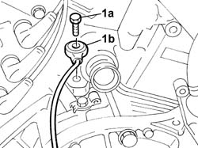

5510C46 FLYWHEEL SIDE DETONATION SENSOR - R.R.
- Path
- Procedures > 55 ELECTRICAL EQUIPMENT > 5510 ENGINE IGNITION > 5510C COIL, CONTROL UNIT, SENSORS > 5510C46 FLYWHEEL SIDE DETONATION SENSOR - R.R.
- Kind
- repair procedure (removal / refitting; the operation number is the code)
- Applies to
- engines: 3.0 V6, 3.2 V6; all production periods
- Interactive page
- https://sloeber94.github.io/elrnDB-lThss/en/#/145807
Applies to: engines: 3.0 V6, 3.2 V6; all production periods
 Removing
Removing
 Refitting
Refitting- Position the vehicle on a lift.
- Open the boot, remove the cover on the left hand side and disconnect the negative battery lead.
See in Op. 7040D50 ENGINE COMPARTMENT UPPER SOUND INSULATION SHIELD - R.R.
See in Op. 1072B42 INTAKE MANIFOLDS (all) - R.R. and Replace gasket
See in Op. 4450B02 Left FRONT WHEEL (one) - R.R.
See in Op. 7055B42 FRONT WHEEL ARCH LINER (one), left or right - R.R.
See in Op. 1048A28 vacuum air circuit resonator pipe - r+r
See in Op. 1048A35 HOSE FROM FLOW METER TO RESONATOR - R.R.
See in Op. 1048A11 COMPLETE AIR FILTER -R.R.
See in Op. 1088C36 THERMOSTAT MOUNTING - R.R.
See in Op. 1088D24 RIGID PIPE for coolant inlet to water pump - R and R
1. Undo the bolt (1a) and remove the flywheel side detonation sensor (1b)

Applies to: engines: 3.0 V6, 3.2 V6; all production periods
Refitting
Removing- Fit the flywheel side detonation sensor and secure it tightening the bolt to the recommended toqrue.
 | Value - daNm | Fastening | Component | Ø |
|---|---|---|---|---|
1a | 2 | Bolt | FLYWHEEL SIDE KNOCK SENSOR | M8 |
See in Op. 1088D24 RIGID PIPE for coolant inlet to water pump - R and R
See in Op. 1088C36 THERMOSTAT MOUNTING - R.R.
See in Op. 1048A11 COMPLETE AIR FILTER -R.R.
See in Op. 1048A35 HOSE FROM FLOW METER TO RESONATOR - R.R.
See in Op. 1048A28 vacuum air circuit resonator pipe - r+r
See in Op. 7055B42 FRONT WHEEL ARCH LINER (one), left or right - R.R.
See in Op. 4450B02 Left FRONT WHEEL (one) - R.R.
-
See in Op. 1072B42 INTAKE MANIFOLDS (all) - R.R. and Replace gasket
-
See in Op. 7040D50 ENGINE COMPARTMENT UPPER SOUND INSULATION SHIELD - R.R.
- Connect the negative battery lead, then close the boot.
- Remove the vehicle from the lift.
Topics linked from this page (9)
- 1048A11 COMPLETE AIR FILTER -R.R.
- 1048A28 vacuum air circuit resonator pipe - r+r
- 1048A35 HOSE FROM FLOW METER TO RESONATOR - R.R.
- 1072B42 INTAKE MANIFOLDS (all) - R.R. and Replace gasket
- 1088C36 THERMOSTAT MOUNTING - R.R.
- 1088D24 RIGID PIPE for coolant inlet to water pump - R&R
- 4450B02 Left FRONT WHEEL (one) - R.R.
- 7040D50 ENGINE COMPARTMENT UPPER SOUND INSULATION SHIELD - R.R.
- 7055B42 FRONT WHEEL ARCH LINER (one), left or right - R.R.